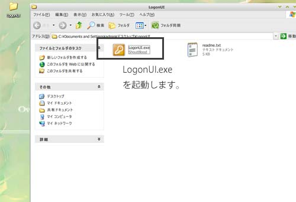
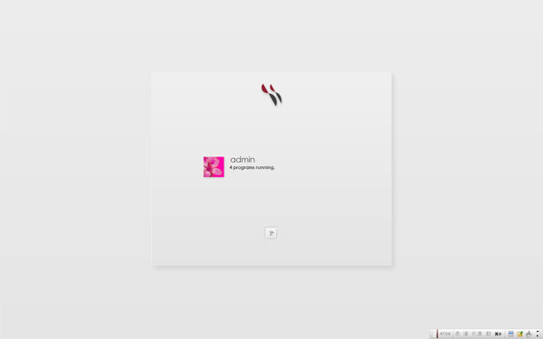

http://www3.to/sblood/にアクセスします。
Softwareをクリック、Logon UI Customizerをダウンロードします。

ダウンロードしたファイルを解凍します。

動作するために次をものをインストールしてください。
Visual Basic 6.0 SP6 ランタイムファイル


こちらからログインスキンをダウンロードします。
ダウンロードしたファイルを解凍して、下記のようにしてください。

そうしたら、スタート→ログオフ→ユーザーの切り替えをクリックして確認してみてください。

通常のログイン画面以外になっていたら成功です。
そうしたら、普通にログオンをしてください。次回の再起動時から変わっていると思います。